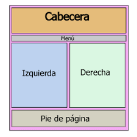

MAQUETACION DE UNA PAGINA
 La maquetación es la distribución de los elementos en nuestra página. Piensa en una página web cualquiera. Seguro que distingues algunos elementos, como encabezados, columnas, menús laterales, etc. Hace unos años, la maquetación de las páginas web se realizaba utilizando tablas (table).Una vez entendido este proceso podía resultar sencillo, aunque si no se dominaban las tablas, podía convertirse en algo tedioso. El problema de las tablas es que generaban un página muy encorsetada, y el código se volvía complejo de entender. Además, algunos buscadores encontraban problemas al analizar la estructura de la página. Actualmente, la maquetación con tablas ha caído en desuso, y se realiza utilizando capas (div), también llamadas divisiones o contenedores. La colocación de las capas en la página se realiza a través de CSS. Esto permite, por ejemplo, que podamos pasar de un diseño con un menú lateral a otro con el menú en la parte superior, sólo cambiando la hoja de estilos.